Películas Destacadas
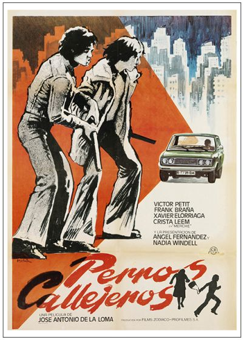 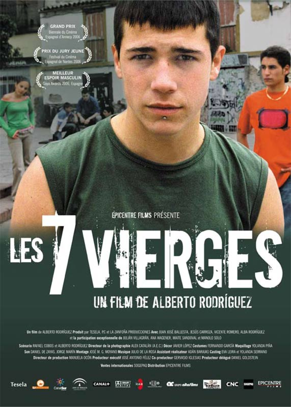 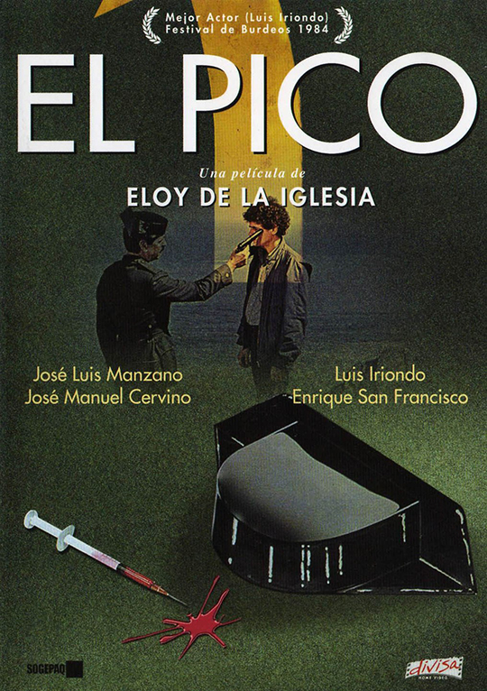 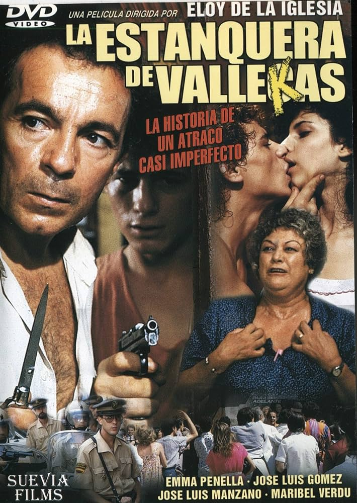 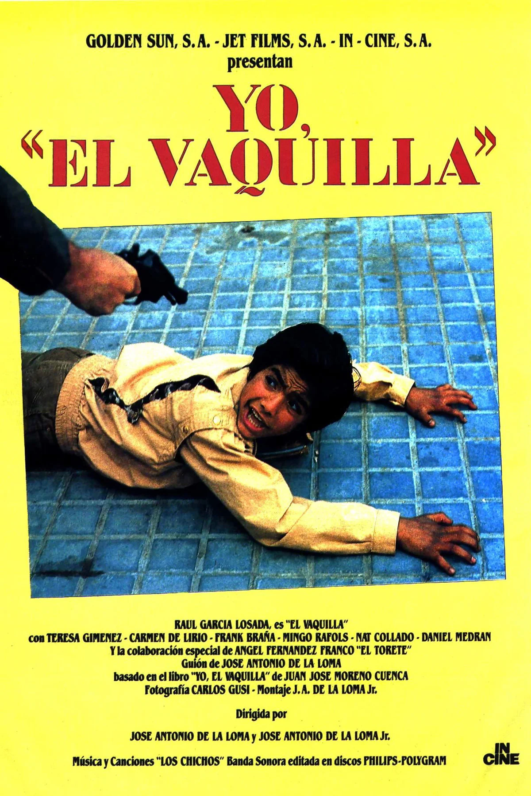 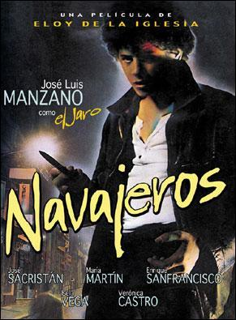 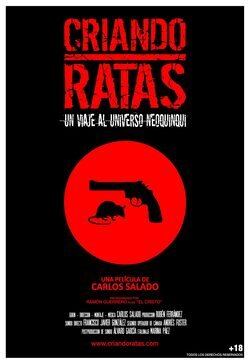 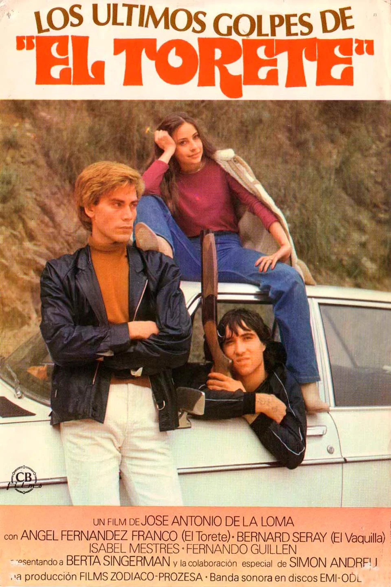 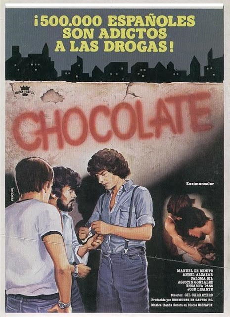 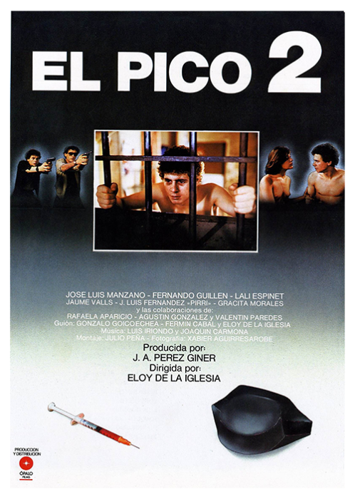
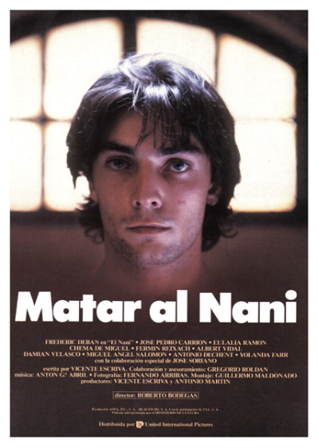
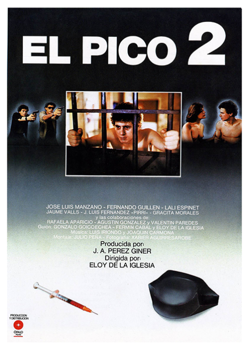
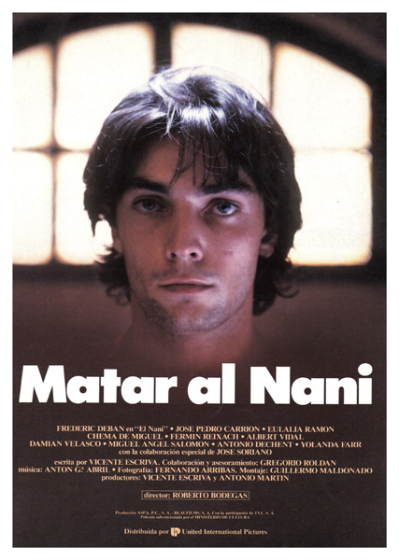
𝕿𝖔𝖕 𝖕𝖊𝖑í𝖈𝖚𝖑𝖆𝖘 𝖉𝖊 𝖈𝖎𝖓𝖊 𝕶𝖎𝖓𝖐𝖎:
"Perros callejeros" es una película emblemática del cine kinki español, dirigida por José Antonio de la Loma en 1977. La historia sigue a "El Nene", un joven marginado que vive en las calles de Madrid y se ve arrastrado a un mundo de delincuencia junto a un grupo de amigos. A medida que la trama avanza, se presentan diversos conflictos, desde la lucha por la supervivencia hasta las traiciones dentro del grupo.
La película destaca por su representación cruda y realista de la vida en la marginalidad, utilizando un lenguaje coloquial y escenas que reflejan la violencia y el desarraigo social. A través de la vida de sus personajes, se exploran temas como la amistad, la lealtad y la desesperanza, en un contexto donde la búsqueda de un futuro mejor parece inalcanzable.
Perros callejeros no solo es importante por su contenido, sino también por su impacto en la cultura popular española, influyendo en la forma en que se representaron las clases bajas en el cine y convirtiéndose en un clásico de culto que resonó con una audiencia que se identificaba con las luchas de los personajes. La película ha dejado una huella significativa en la historia del cine español, abriendo el camino para nuevas narrativas sobre la vida urbana y marginal.
Cartel de la película "Perros callejeros". Trailer de la película
"7 vírgenes" es una película española de 2005 dirigida por Alberto Rodríguez. La trama sigue a un grupo de adolescentes que, tras salir de un centro de menores, se embarcan en un último fin de semana de libertad y rebeldía antes de enfrentar las consecuencias de sus acciones.
El protagonista, "Dani", es un joven que planea robar una casa junto a sus amigos, pero el plan se complica y se desata una serie de eventos imprevistos. A lo largo del filme, se exploran temas como la amistad, la búsqueda de identidad y el desencanto de la juventud, así como la influencia del entorno en sus decisiones.
La película combina elementos de drama y thriller, y se caracteriza por su enfoque realista y su representación de la vida en los barrios marginales. "7 vírgenes" ha sido reconocida por su dirección, actuaciones y la forma en que aborda las problemáticas sociales de la juventud en España.
Cartel de la película "7 virgenes" (debido a que la película es catalana, el cartel esta en ese idioma).Trailer de la película
El pico es una película española de 1983 dirigida por Eloy de la Iglesia. La historia sigue a un joven llamado "Andrés", que tras salir de un centro de reeducación, se reencuentra con su amigo "Berto". Juntos se sumergen en el mundo de las drogas, la delincuencia y la marginalidad en Madrid.
A medida que la trama avanza, Andrés se ve atrapado en una espiral de adicción y violencia, enfrentándose a las consecuencias de sus decisiones y la presión de su entorno. La película explora temas como la amistad, la traición y el desencanto juvenil, ofreciendo una mirada cruda y realista sobre la vida de los jóvenes en los años 80 en España.
El pico es notable por su enfoque en la problemática de las drogas y sus efectos devastadores, así como por su crítica social hacia la situación de la juventud de la época. La película ha sido aclamada por su dirección, actuaciones y su valentía al abordar temas tabú, convirtiéndola en un clásico del cine kinki.
Cartel de la película "El pico". Trailer de la película
La estanquera de Vallecas es una película española de 1987 dirigida por José Antonio de la Loma. La trama gira en torno a un asalto a un estanco en el barrio de Vallecas, donde la propietaria, "Rosa", se convierte en rehén de dos delincuentes, "El Reloj" y "El Chino".
A lo largo de la película, se desarrollan tensiones entre los personajes, revelando sus historias personales y motivaciones. Mientras Rosa intenta mantener la calma y salvar su vida, los delincuentes muestran su vulnerabilidad y la desesperación que los llevó a cometer el crimen.
La película combina elementos de drama y comedia, ofreciendo una crítica social sobre la vida en los barrios marginales de Madrid. A través de diálogos ingeniosos y situaciones tensas, "La estanquera de Vallecas" explora temas como la desigualdad, la amistad y la lucha por la supervivencia. Es considerada un clásico del cine kinki y ha sido elogiada por su guion y actuaciones.
Cartel de la película "La estanquera de vallecas". Trailer de la película
Es una película de culto dentro del cine quinqui español, dirigida por Antonio Drove y basada en la vida de José Antonio Ramos Sucre, conocido como "El Vaquilla", un famoso delincuente juvenil y líder de una banda de ladrones en los años 80. La película mezcla elementos de la realidad y la ficción para contar la historia de este joven delincuente, que pasó buena parte de su vida en prisión y fue una figura mediática de la época.
La película sigue a El Vaquilla, un joven rebelde y problemático, que desde muy pequeño está inmerso en el mundo del crimen y la delincuencia. A lo largo del filme, se exploran sus delitos, su vida en los barrios marginales y las dificultades para escapar de un destino marcado por la pobreza y la falta de oportunidades. A pesar de su juventud, El Vaquilla es un personaje audaz, carismático y algo romántico, que vive a contracorriente de la sociedad y de las leyes. La película muestra tanto sus momentos de rebeldía como su vulnerabilidad, y cómo su entorno social y su educación le empujan a un ciclo de delitos y encarcelamiento.
Uno de los temas centrales de "Yo, El Vaquilla" es la crítica social a la marginalidad y las condiciones de vida de los jóvenes en barrios desfavorecidos, donde la delincuencia y la falta de futuro son a menudo la única salida para muchos. La película también pone de manifiesto la figura de El Vaquilla como un símbolo de rebeldía juvenil, pero también como una víctima del sistema.
Cartel de la película "Yo,el vaquilla." Trailer de la película
La película sigue la historia de José, un joven delincuente de un barrio marginal de una ciudad española, que sobrevive mediante robos y peleas. El título de la película hace referencia a las navajas, un tipo de cuchillo usado en peleas callejeras, que simboliza la violencia y el ambiente de caos en el que se mueven los personajes.
"Navajeros" es una de las obras clave dentro del cine quinqui y marcó un hito en el cine español de los años 80. Refleja la dureza de la realidad en la que se encontraban muchos jóvenes españoles de la época, atrapados en una sociedad que comenzaba a modernizarse pero que no ofrecía a todos sus ciudadanos las mismas oportunidades. La película fue muy influyente, ayudando a consolidar el subgénero del cine quinqui y creando una imagen de los jóvenes delincuentes como protagonistas de una lucha diaria por la supervivencia.
La película tiene una gran carga de realismo social y se mantiene como un referente en el cine de los años 80, especialmente en lo que respecta a la representación de la violencia y la marginalidad urbana en España.
Cartel de la película "Navajeros". Trailer de la película
La película cuenta la historia de Charly (interpretado por Antonio Valero), un joven que vive en una de las zonas más pobres de Madrid y que se ve arrastrado a una vida de delincuencia, violencia y drogas. Junto a sus amigos, Charly se enfrenta a una vida de lucha por sobrevivir en un contexto de pobreza y desesperanza, donde la familia es disfuncional, la escuela no es una opción, y las oportunidades escasean.
La película se centra en las dificultades de un grupo de jóvenes que, sin alternativas en su entorno, se ven inmersos en el mundo del crimen: robos, tráfico de drogas, peleas y la violencia como medio de subsistencia. A través de estos personajes, José Antonio de la Loma presenta una mirada cruda y directa a la realidad de los barrios marginales en la España de la transición, en los cuales muchos jóvenes se sienten condenados a vivir en un ciclo de pobreza y criminalidad, sin salida.
Cartel de la película "Criando ratas". Trailer de la película
La película narra la vida de José Antonio Ramos, apodado "El Torete", un joven delincuente que se convierte en un personaje famoso debido a sus actividades criminales y su enfrentamiento con la ley. A través de su historia, se muestra cómo la falta de oportunidades, el desarraigo social y la influencia de un entorno violento y marginal llevan a los jóvenes a caer en el mundo del crimen.
"El Torete" está basada en la vida real de José Antonio Ramos, conocido por su apodo "El Torete". Ramos fue un joven que ganó notoriedad en los años 70 debido a su participación en robos y atracos, y su posterior fuga de la cárcel. Aunque el personaje de "El Torete" en la película está dramatizado, la historia refleja las realidades de un joven atrapado por el sistema y sus luchas con la ley. La película toca temas como la pobreza, la falta de oportunidades y la brutalidad de las instituciones.
Sigue a este joven mientras se involucra en robos, peleas y enfrentamientos con la policía. La película no solo muestra sus acciones delictivas, sino también los conflictos internos de los personajes, las tensiones sociales y las dificultades que enfrentan aquellos atrapados en un sistema que no les ofrece alternativas. Como en otras películas del cine quinqui, la violencia y la desesperanza son protagonistas, y el filme busca mostrar la realidad social de la España de la época.
Cartel de la película "Los últimos golpes del Torete". Trailer de la película
"Chocolate" (1987) es una película española dirigida por José Antonio de la Loma y protagonizada por José Luis Manzano, quien también tuvo un papel destacado en otras películas del cine quinqui como "El Torete". La película pertenece al subgénero del cine quinqui, caracterizado por retratar las vidas de jóvenes marginados, delincuentes y personas en situaciones de pobreza y exclusión social, todo ello en un contexto urbano y violento.
La historia se centra en "Chocolate" (interpretado por José Luis Manzano), un joven delincuente que se ve atrapado en la violencia y las dificultades de la vida en los barrios marginales de la España de los años 80. A lo largo de la película, Chocolate se enfrenta a las consecuencias de su vida criminal mientras trata de encontrar una salida a la pobreza y la desesperanza que lo rodean.
La trama sigue la vida de este joven que, junto a su grupo de amigos, se ve envuelto en situaciones de robos, peleas y conflictos con la ley. Chocolate se convierte en una especie de antihéroe que lucha por sobrevivir, pero a medida que la película avanza, se da cuenta de las consecuencias de sus actos y de las dificultades de escapar de su entorno.
Cartel de la película "Chocolate". Trailer de la película
"Colegas" (1982) es una película española dirigida por José Antonio de la Loma y uno de los títulos más importantes dentro del subgénero del cine quinqui. Es una de las películas más representativas de los años 80 que refleja la vida de los jóvenes de los barrios marginales en España, en particular, de aquellos que se ven involucrados en la delincuencia juvenil como medio de supervivencia.
La película sigue a José (José Luis Manzano), un joven que forma parte de un grupo de amigos que se dedican a robar, pelear y vivir en la marginalidad. José está atrapado en un ciclo de violencia, pobreza y desesperanza, que marca las vidas de los adolescentes de su entorno. El título de la película, "Colegas", hace referencia a los lazos de amistad entre los jóvenes, pero también a las relaciones de dependencia que se crean dentro del grupo de delincuentes.
A través de los personajes, la película muestra cómo la juventud de los barrios marginales se ve afectada por la pobreza, la falta de educación y la ausencia de alternativas. A medida que la historia avanza, los amigos de José se ven involucrados en situaciones de violencia y, aunque buscan un escape, están atrapados en un sistema que no les ofrece salidas. La película examina la descomposición social de la España de la época y cómo los jóvenes se ven arrastrados a una vida delictiva.
Cartel de la película "Colegas". Trailer de la película
"El Pico 2" es una película española dirigida por Álex de la Iglesia y estrenada en 1996. Es la secuela de la famosa película "El Pico" (1983), también dirigida por Álex de la Iglesia, que es parte del cine quinqui español, un subgénero del cine que retrata las duras realidades de la vida en los barrios bajos y la marginalidad urbana en España en las décadas de los 80 y 90.
La película se sitúa en los años posteriores a los acontecimientos de El Pico, y sigue a los mismos personajes principales, quienes continúan enfrentando la violencia, las drogas y la pobreza en los suburbios de Madrid. El Pico 2 ahonda más en los temas de adicción, relaciones rotas y el impacto de la vida en la calle sobre los jóvenes. La historia continúa mostrando la dureza del contexto social, con una atmósfera cruda y realista que caracteriza el cine quinqui.
La película muestra, principalmente, la historia de El Lute, un joven atrapado en el ciclo de la criminalidad y el abuso de sustancias, lo que lleva a la ruptura de su familia y de sus relaciones personales. La violencia y la desesperación predominan en un retrato del lado más oscuro de la sociedad urbana.
Cartel de la película "El pico 2". Trailer de la película
La película narra la historia de un grupo de amigos que viven situaciones complejas y cómicas cuando uno de ellos, Nani, termina siendo el centro de una serie de malentendidos, intriga y violencia. La trama juega con los giros de acción y comedia negra, donde las situaciones se complican rápidamente, y el tono de la película se va volviendo más absurdo a medida que los personajes intentan resolver el caos en el que se han metido.
"Matar al Nani" tiene un enfoque peculiar en el humor, con una atmósfera algo surrealista y un tono oscuro que critica la sociedad moderna y la naturaleza de las relaciones personales. La película busca hacer reflexionar sobre las decisiones que tomamos y las consecuencias de nuestras acciones, pero lo hace con un estilo desenfadado y sin tomarse demasiado en serio.
La película cuenta con un elenco de actores españoles relativamente jóvenes, algunos con trayectorias en cine y televisión, que interpretan a los distintos personajes atrapados en esta serie de eventos cada vez más caóticos.
Cartel de la película "Matar al Nani". Trailer de la película
Mas páginas web que pueden ser de tu interés: